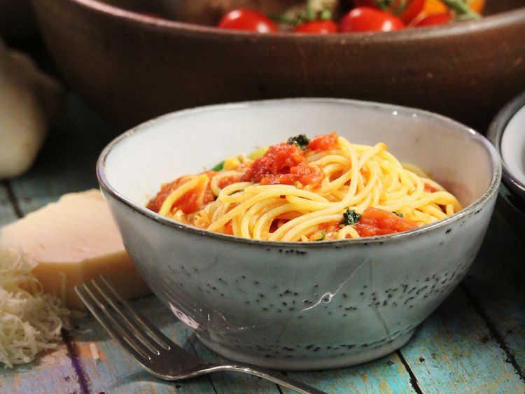

tomato pasta

his pasta dish with a fresh tomato sauce and fragrant basil is wonderful served with a green salad. The best thing about this meal is that it's easy to throw together in just a few minutes.
- 1 (16 ounce) package dry penne pasta
- 8 Roma (plum) tomatoes, diced
- ½ cup Italian dressing, or to taste
- ¼ cup finely chopped fresh basil
- ¼ cup diced red onion
- ¼ cup grated Parmesan cheese
- step 1 ||Bring a large pot of lightly salted water to a boil. Add penne and cook, stirring occasionally, until tender yet firm to the bite, 8-10 minutes.
- step 2 || Drain pasta and transfer to a large bowl. Add tomatoes, Italian dressing, basil, red onion, and Parmesan cheese; toss until well coated.
- Step 3 || Enjoy
home
back to home for more recipes